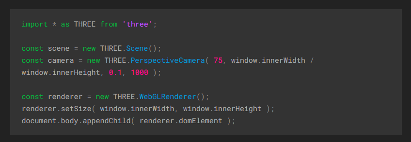

Introduction to
three.js
About three.js
- Three.js is a 3D library used to get 3D content on a webpage.
- It is an abstraction layer built on top of webGL
Structure of three.js

- The scenegraph has a secene object as its root.
- A scene and a camera is passed to a Renderer.
- Mesh, Geometry, and Materials are used for specifying the geometry and texture of 3D models.
Creating a Scene
To display anything, we need: A scene, A camera and a renderer.
SceneGraph for basic cube:

Adding the Cube
const geometry = new THREE.BoxGeometry( 1, 1, 1 );const material = new THREE.MeshBasicMaterial({color: 0x00ff00}s);const cube = new THREE.Mesh( geometry, material );scene.add( cube );camera.position.z = 5;Rendering the Scene
function animate() { requestAnimationFrame( animate ); renderer.render( scene, camera ); } animate();Animating the Cube
cube.rotation.x += 0.01;
cube.rotation.y += 0.01;